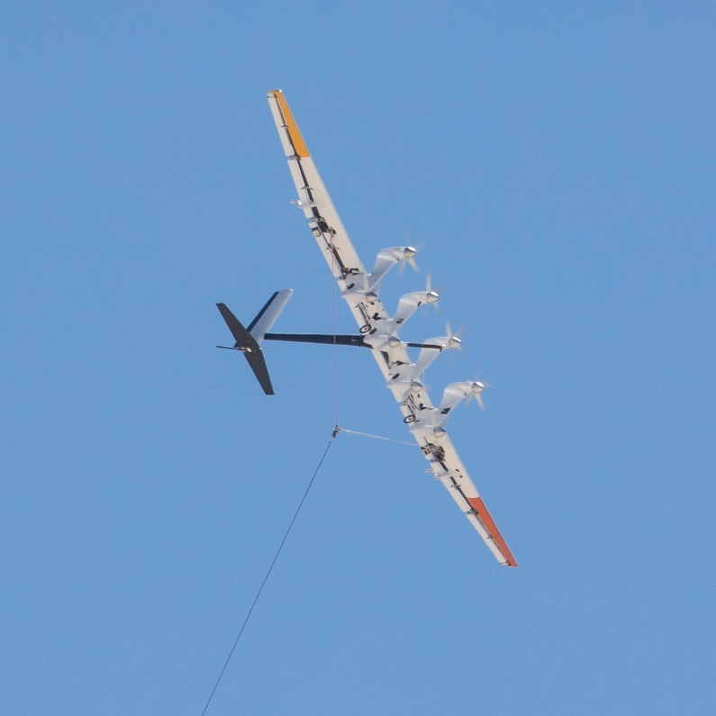
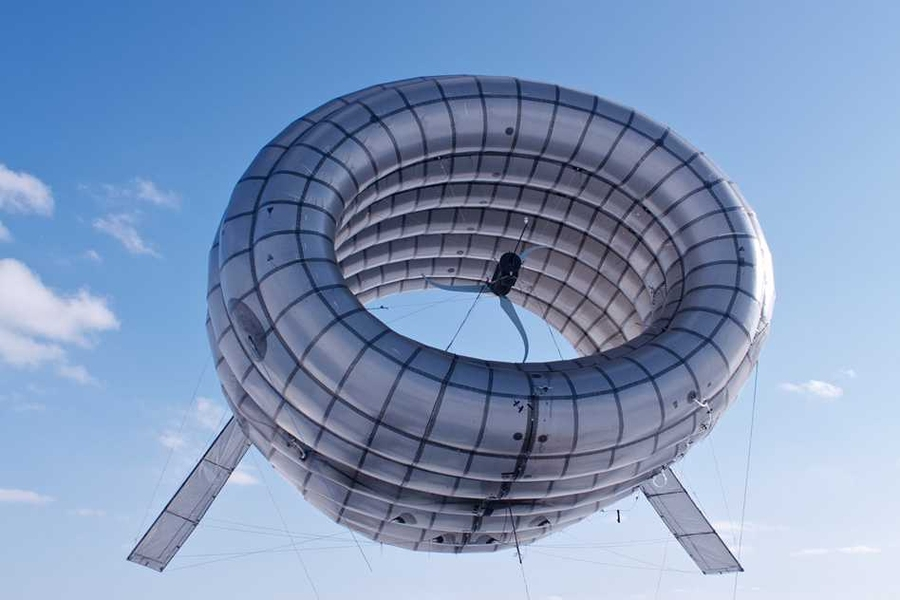

Větrná energie
Obecné informace
- patří mezi obnovitelné, neboli nevyčerpatelné, zdroje
- řadí se k historicky nejstarším využívaným zdrojům energie
- nyní se používá především k vytváření elektrické energie pomocí větrných elektráren (turbín)
- nejobvyklejším využitím jsou větrné elektrárny
- s využitím proudění větru lze roztočit vrtuli s elektrickým generátorem
- vhodnými pro umístění větrné elektrárny jsou lokality ve vyšších nadmořských výškách, kde vítr dosahuje rychlosti nad 5 m/s
- v historii se místo převodu na elektřinu konala mechanická práce
- síla větru je dodnes využívána k pohonu dopravních prostředků, především lodí (plachetnice)
Létající větrné elektrárny
- jedná se o nosnou konstrukci s generátorem a listy vrtule na vrcholku
- jejich provoz je ekologický a téměř bezplatný
- jsou poháněny větrem (nevyčerpatelným zdrojem)
- objevují se různé nápady na alternativní typy větrných elektráren (projekt pod názvem Makani)
- k technologicky primitivnějším typům patří například větrná turbína společnosti Altaeros Energies

Větrný drak Makani (větrný drak Makani, online)

Létající větrná turbína společnosti Altaeros Energies